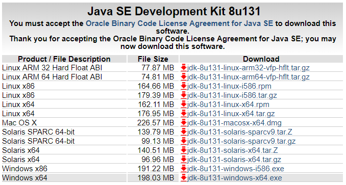
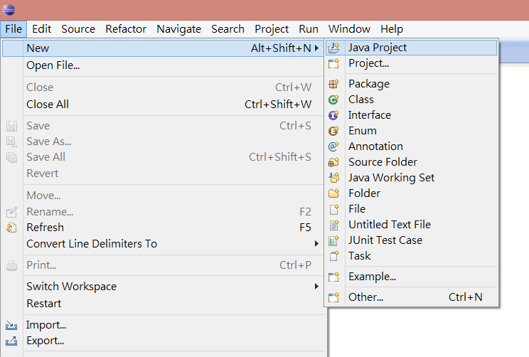
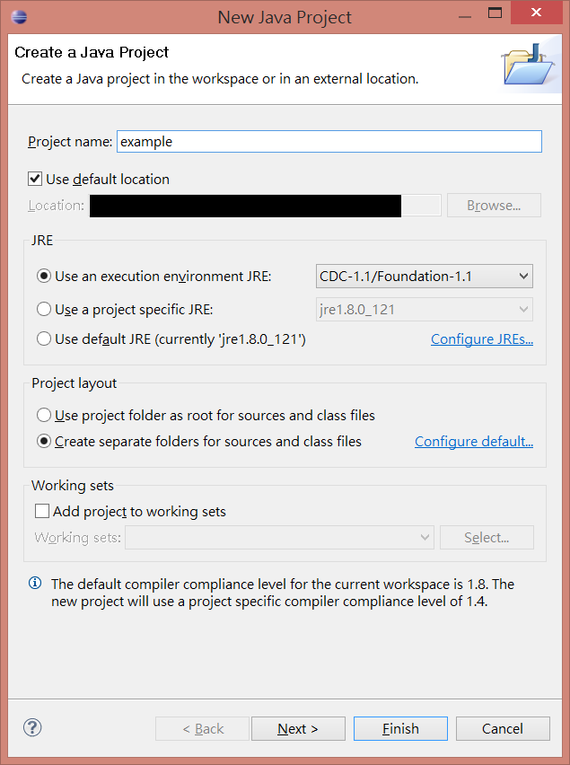
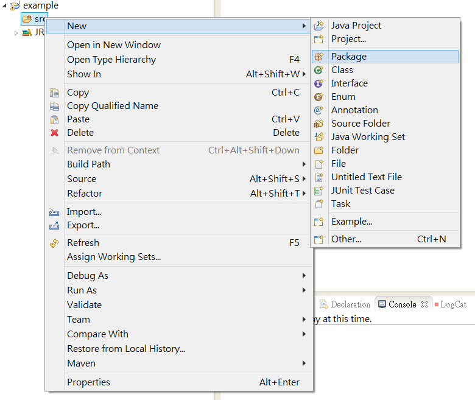
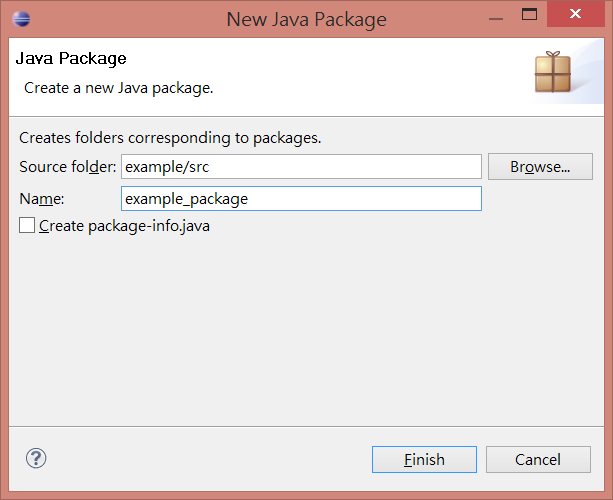
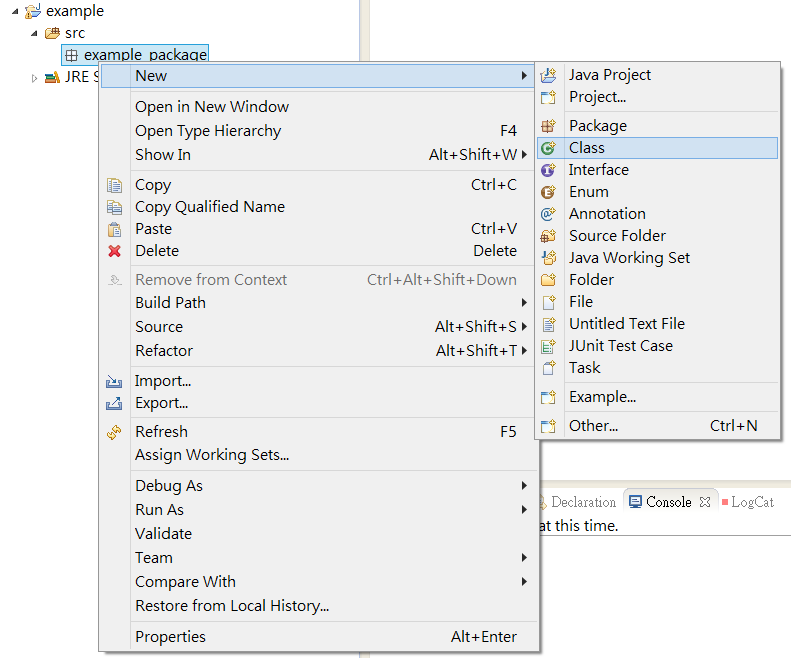
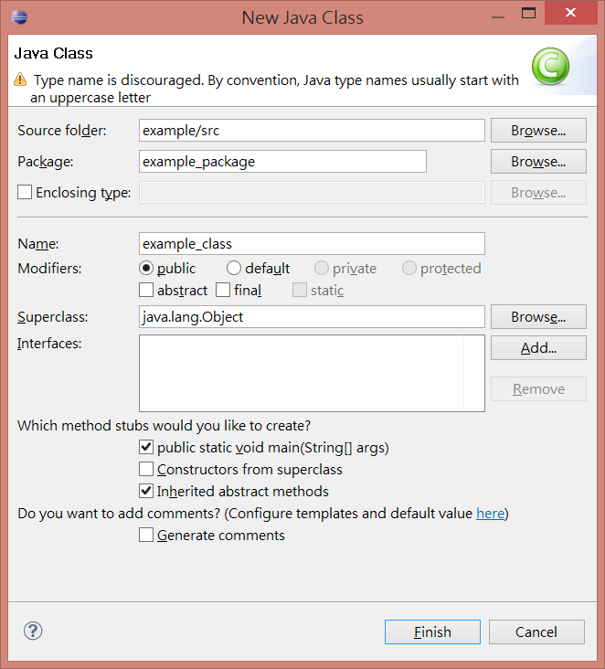

.

簡介
安裝
安裝JDK（Java Development Kit）
點此前往
先點擊上方的Accept License Agreement，再選擇對應作業系統的安裝檔。

下載後依其指示即完成JDK的安裝。
設定環境變數
對「電腦（本機）」按下滑鼠右鍵，選擇「內容」，再選擇「進階系統設定」。
接著選擇位於最底下的「環境變數(N)」，在「系統變數」中選擇「Path」，然後按下「編輯(I)...」
在「變數值」的最後面加上JDK的安裝目錄中bin的位置，加上前記得加上分號。
接著檢查SDK是否安裝成功，按下Windows+R，輸入cmd，輸入「java -version」和「javac -version」指令測試。
安裝Eclipse
點此前往
（註：Eclipse有多個版本，建議直接google搜尋「eclipse IDE for java developer」並下載。）
安裝時注意路徑不能有中文及空白。
安裝後的第一次開起會詢問工作區的資料夾路徑，此路徑是用來放將來撰寫的專案。
建立專案
新增專案
點擊File→New→Java Project

輸入專案名稱再點擊Finish即可。

新增Package
在Package Explorer中找到剛才建立的專案，對裡面的src資料夾點右鍵，
選擇New→Package，打上Package名稱再按下Finish即可。


新增Class
對剛剛建立的Package點右鍵並選擇New→Class。

接著輸入Class名稱，並將public static void main(String[] args)打勾，
再按下Finish即可。
